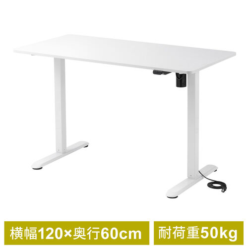
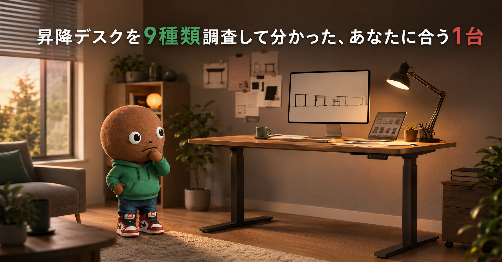
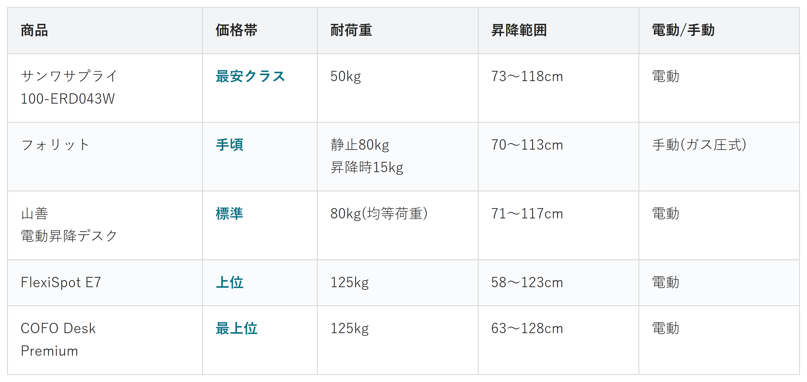

サンワダイレクトで見るデスク環境を整えたい人へ
座りっぱなしから、
自分に合う1台で卒業。
昇降デスク9候補を調査。耐荷重・昇降範囲・電動/手動から、選び方の違う5商品を比較しました。
自分に合うデスクを探す
この記事はAmazonアソシエイト・プログラムの参加者として、紹介料を得る場合があります（PR）。仕様は調査時点の情報です。
9候補から、選び方の違う5商品に絞りました。まずは気になる1台へ。向いている人・向いていない人と、低評価だった商品もまとめています。
9候補を調査
5商品に厳選
低評価商品も確認済み
結論から先に言うと：
あなたの選び方に合う、1台を。
横にスワイプして、5商品を見比べる
選び方の基準は3つだけ
調べてわかったのは、基準はシンプルということです。
1つ目は「耐荷重」。モニターや荷物の重さに耐えられるか。
2つ目は「昇降範囲」。自分の身長に合った高さまで調整できるか。
3つ目は「電動か手動か」。電源の有無や昇降の手間が変わります。
天板サイズは、5商品とも奥行60〜70cm台で大きな差はありませんでした。モニターを複数台載せる場合は、モニターアームと組み合わせると天板をより広く使えます。
比較表

価格帯・耐荷重・昇降範囲・電動/手動の比較（価格帯は最安クラス〜最上位の5段階）
サンワサプライ 100-ERD043W
- 最安クラス
- 耐荷重：50kg
- 昇降範囲：73〜118cm
- 電動
フォリット
- 手頃
- 耐荷重：静止80kg・昇降時15kg
- 昇降範囲：70〜113cm
- 手動（ガス圧式）
山善 電動昇降デスク
- 標準
- 耐荷重：80kg（均等荷重）
- 昇降範囲：71〜117cm
- 電動
FlexiSpot E7
- 上位
- 耐荷重：125kg
- 昇降範囲：58〜123cm
- 電動
COFO Desk Premium
- 最上位
- 耐荷重：125kg
- 昇降範囲：63〜128cm
- 電動
向いてる人
- 初めて昇降デスクを試したい人
- 価格を抑えたい人
向いてない人
- 複数モニターや重い機材を載せたい人
選ぶ決め手とにかく安さを優先するなら、この1台です。
低評価レビューも見ました
総じてシンプルな構造でコスパが高いという評価が多く、目立った不満は見当たりませんでした。好みの高さを記憶するメモリーボタンが無く、操作ボタンが上下のみというシンプルさが物足りないと感じる人もいるようです。
参考：ツブヤク。
天板サイズは120×60cm。
保証は1年でした。
サンワダイレクトで見る→向いてる人
- 電源の位置を気にせず設置したい人
- 作動音を避けたい人
向いてない人
- 頻繁に高さを変えたい人
- 昇降中に重い物を置きたい人
選ぶ決め手電源を気にせず使いたいなら、この1台です。
低評価レビューも見ました
総じて評価は高く、目立ったデメリットは見当たりませんでした。一般的な昇降デスクの傾向として、初期費用の高さやケーブル類が増える点が挙げられています。商品ページに「法人様向け」の表記が見られるため、個人で購入する場合は事前に確認しておくと安心です。
耐荷重は、静止時80kg。昇降時は15kgと下がる点に注意です。
昇降範囲は70〜113cm。天板サイズは120×70cm。
保証は1年でした。
Amazonで見る→向いてる人
- 部屋に合わせて天板の横幅を選びたい人
- 国内メーカーの安心感を重視する人
向いてない人
- 保証年数を重視して比較したい人
選ぶ決め手天板サイズの選びやすさで選ぶなら、この1台です。
低評価レビューも見ました
総じて満足度は高く、安定性や高さメモリー機能への評価が目立ちました。総重量が約38.5kgあるため、一度設置すると気軽には動かしにくいという声がありました。
参考：凡人ガジェット
昇降範囲は71〜117cm。
保証期間は、公式ページに記載がありませんでした。
Amazonで見る→向いてる人
- 複数モニターなど、重い機材を載せたい人
- 長期保証を重視する人
向いてない人
- 天板とセットの価格を抑えたい人
選ぶ決め手耐荷重と保証の長さを優先するなら、この1台です。
低評価レビューも見ました
組み立てが大変で、手動で組み立てる場合は電動ドライバーが必須という声がありました。説明書のケーブル接続の説明がE7とE7 Proで混在していて配線に迷った、奥行60cmの天板だと脚フレームより奥行が短く壁との間に隙間ができる、という指摘もありました。
参考：グッドガジェット
昇降範囲は58〜123cm。
保証は5年。分かっている中では一番長い期間です。
Amazonで見る→向いてる人
- 素材やデザインにもこだわりたい人
向いてない人
- 初期費用をとにかく抑えたい人
選ぶ決め手価格より長期的な満足感を重視するなら、この1台です。
低評価レビューも見ました
180cm幅の天板だけで重量46kgあるなど本体が重く、天板裏のマグネットフックにヘッドフォンをかけると落ちやすい、デスク面積が広い分ホコリが溜まりやすいという声がありました。「1年経たずに天板が割れた」というSNS上の報告も見られました。
参考：Neet Blog
昇降範囲は63〜128cm。
保証は3年。天板の素材や仕上げにこだわった作りです。
Amazonで見る→9候補をどう絞った？ 調査の経緯を見る
デスク環境を整えたくて、昇降デスクをずっと検討していました。種類が多すぎて、正直迷います。なので今回、スペックを調べ比較しました。
9候補から絞り込みました
今回、メーカー公式サイトと価格比較サイトで調査を行いました。ニトリ・サンワサプライ・フォリット・山善・バウヒュッテ・FlexiSpot・COFO・kanademonoの9候補です。この中から、5つに絞りました。
ニトリは、昇降範囲や耐荷重の情報が出典で確認できず見送りました。バウヒュッテは昇降上限が101cmと低めで、価格も出典がはっきりしないため見送りました。kanademonoはCOFOと同じプレミアム帯で役割が重複し、価格もさらに高いため見送りました。
レビューが心配な3商品も見ました
上の9候補とは別にAmazon専業ブランドの商品も3つ、サクラチェッカーで念のため確認しました。ErGearとAlebertは、レビューの信頼度がAmazon平均と同程度という評価でした。Suhapupは、メーカー単位で「要注意メーカー」の警告が出ていました。
3つとも、Amazon専業の海外ブランドでした。公式サイトが確認できず、価格比較サイトにも情報がありませんでした。国内メーカーや公式サイトを持つブランドは、この点で安心材料になりそうです。
これで合計12候補を見た上での、5商品の比較になります。残った5つは価格帯も使い方もはっきり分かれていたので、この記事はこの5つで比較します。
調べてみて驚いたこと
12商品を比較していて、一番驚いたのはFlexiSpotとCOFOでした。耐荷重は同じ125kg。なのに価格は約3万円も違う。普通なら「割高」で終わる話です。
でも調べていくと、差は耐荷重ではなく天板の素材や仕上げにありました。保証年数だけ見ると、FlexiSpotの方がCOFOより長いのに、価格はCOFOの方が高いという逆転もありました。
フォリットを調べていた時も発見がありました。手動のガス圧式は、静止時は80kgに耐えられるのに、昇降している最中は15kgまでしかかけられません。電動モーター式にはこの区別が無いので、仕組みの違いがそのまま数字に出ていました。「今の価格」や「耐荷重」だけで比べると見誤る商品がある、という発見でした。
迷ったらこれ
ここまで読んでもまだ迷ったら、耐荷重125kgと保証5年を両立するFlexiSpot E7が最初の1台におすすめです。
複数モニターなど重い機材を載せる可能性があっても余裕を持って使えるうえ、保証期間の長さも安心材料になる選択です。
Amazonで見る→よくある質問
Q. 昇降デスクは賃貸でも置ける？
A. はい。基本的には床に置くだけの据え置き型なので、賃貸でも設置できます。
Q. 電動と手動、どちらが良い？
A. 頻繁に高さを変えるなら電動、たまにでよいなら手動で十分です。
Q. 耐荷重ギリギリでも大丈夫？
A. 上限に近いと、昇降が不安定になることがあります。余裕を持った耐荷重の商品を選ぶのが無難です。
こんな記事も書いてます
ミートボーの調査部屋で他の記事も見る（全本）


出典
- サンワダイレクト 100-ERD043W 商品ページ：sanwa.co.jp
- オフィスコム フォリット 商品ページ：office-com.jp
- 山善 電動昇降デスク 公式（山善ビズコム）：yamazenbizcom.jp
- FlexiSpot E7 公式ストア（楽天）：楽天市場
- COFO Desk Premium 公式：cofodesk.jp
- ニトリ 昇降デスク商品ページ：nitori-net.jp
- サクラチェッカー（ErGear）：sakura-checker.jp
- サクラチェッカー（Alebert）：sakura-checker.jp
- サクラチェッカー（Suhapup）：sakura-checker.jp
- サンワサプライ 100-ERD043W 低評価レビュー参考：ツブヤク。
- フォリット 低評価レビュー参考：WorkToolSmith
- 山善 低評価レビュー参考：凡人ガジェット
- FlexiSpot E7 低評価レビュー参考：グッドガジェット
- COFO Desk Premium 低評価レビュー参考：Neet Blog